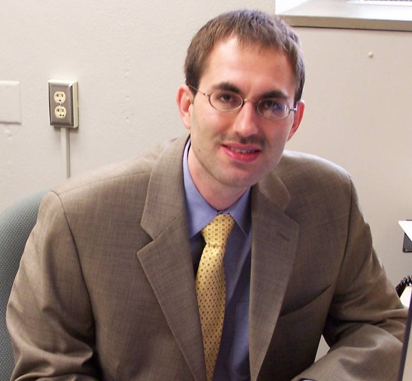
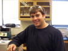
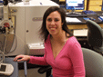
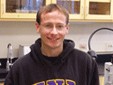
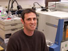
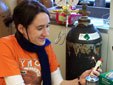
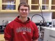

Coon Lab People
| Name | Room | Phone | Position | ||
 |
Joshua J Coon | 3309 | 3-1718 | Professor | jcoon@chem.wisc.edu |
 |
David Good | 3223 | 890-0763 |
NIH Predoctoral Fellow |
dgood@wisc.edu |
 |
April Jue | 3223 | 890-0763 | Graduate Student | ajue@wisc.edu |
 |
Jason Russell | 3223 | 890-0763 | Graduate Student | jrussell@chem.wisc.edu |
| Graeme McAllister | 3223 | 890-0763 |
NIH Predoctoral Fellow |
graeme.mca@gmail.com | |
 |
Doug Phanstiel | 3223 | 890-0763 | Graduate Student | doug.phanstiel@gmail.com |
 |
Danielle Swaney | 3223 | 890-0763 |
NIH Predoctoral Fellow |
swaney@wisc.edu |
 |
Aaron Ledvina | 3223 | 890-0763 | Graduate Student | arledvina@gmail.com |
| Justin Brumbaugh | 3223 | 890-0763 | NSF and NIH Predoctoral Fellow | brumbaugh@wisc.edu | |
 |
Michael Williams | 890-0763 | Undergraduate Graphic Design & Illustration |
||
My primary goal is advancing electron transfer dissociation (ETD) equipped mass spectrometer instrumentation. There are two sub-categories to this goal: (1) upgrading and optimizing mass spectrometer equipment which is already capable of performing ETD, and (2) adapting additional mass spectrometer equipment to be compatible with ETD. There have already been two significant successes - one for each sub-category. During the late spring of 2006, I collaborated with another member of my lab group (Danielle Swaney) on a project that had the goal of converting non-dissociated electron transfer (ET) products into c and z-type product ions (i.e. the typical ETD product ions). I adapted the instrument (an LTQ equipped with a prototype Thermo Electron ETD package) to do gentle CAD of the electron transfer product. At low activation energy, we found that the ET product ions could be converted in c and z-type ions without generating typical CAD ions, which would have cluttered our spectra. By adding in this additional activation step, we were able to generate additional fragment ions and produce spectra that were far informative. In the fall of 2006, I adapted an LTQ-Orbitrap hybrid mass spectrometer to allow for ETD. Mass analysis with an Orbitrap produces spectra that are significantly more resolved and with better mass accuracy. Do to spacial complications, I wasn't able to mount a CI source on the rear of the instrument (i.e. how the current LTQ's have been adapted to allow for ETD). Instead I used the same atmospheric pressure inlet, on the front of the instrument, to inject both the cations and the reagent anions. To utilize the same inlet for both ions, I had to pulse the sources. This work drew heavily from previous research done by the McLuckey group at Purdue. The resulting spectra, which were significantly more resolved and had much better mass accuracy, allowed for better fragment identification. In particular highly charged fragment ions could now be identified which would have been impossible with QLT mass analysis. On a personal note, I was able to spend the summer of 2006 as an intern for Thermo Electron. I worked closely with Jae Schwartz and John Syka developing software for the Thermo commercial LTQ-ETD package. I'm extremely grateful for this opportunity, which was made possible through the generosity of Thermo Electron and the Biotechnology Training Program at the University of Wisconsin-Madison. Thanks to my time spent at the company - I am far more adept at executing these instrumentation projects in a timely and effective manner. Doug Phanstiel I received a B.S. in biochemistry and cell biology from the University of California, San Diego. I am a first year graduate student in analytical chemistry. My research focuses on using mass spectrometry to identify post-translational modifications of proteins isolated from human embryonic stem cells. In addition to identification we are interested in quantitatively describing changes in expression and modification of these proteins in response to different cell growth conditions. I am also involved in other projects implementing physical and/or software modifications to our LTQ mass spectrometer in order to enhance its protein characterization capabilities. Consecutive gas phase reactions have the ability to improve fragmentation as well as provide novel information about the peptides or proteins of interest. I am working on methods incorporating a number of different reactions in an intelligent and data dependent manner in an effort to increase efficiency of fragmentation. Danielle Swaney I am a second year graduate student in the chemistry department and am developing methods for identification and quantitation of protein phosphorylation. I am from the pig and corn capital of the world Iowa). Aaron Ledvina I recieved a B.S. in chemistry and physics from Carthage College in May of 2006. I am currently a first-year graduate student inAnalytical Chemistry in the Coon group at UW-Madison. My research interests include implementation of new concepts on andadvancement of the various instruments found in the Coon Lab. My prior work/internship experiences include time with S C Johnson, Modine, and Henkel surface technologies. When not in lab, I enjoy fishing, hunting, kayaking, and ultimate frisbee. I am origionally from New Berlin, WI. |